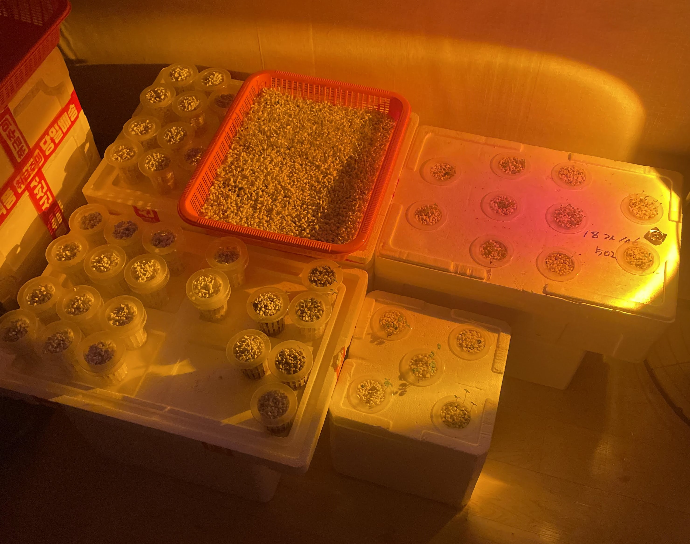
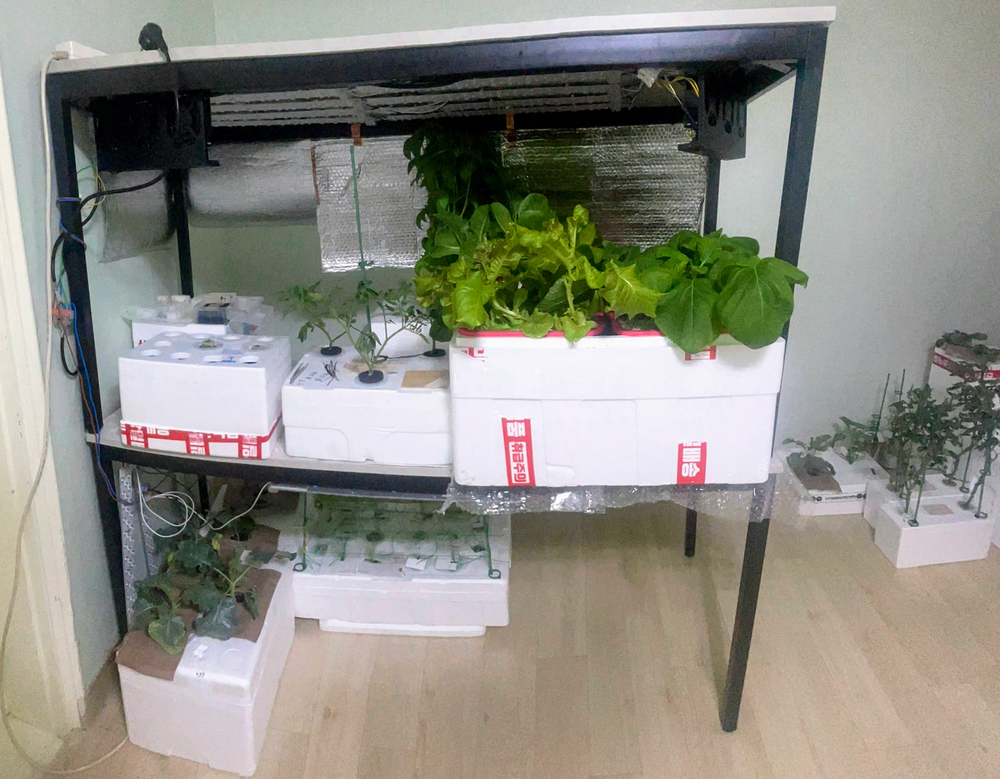
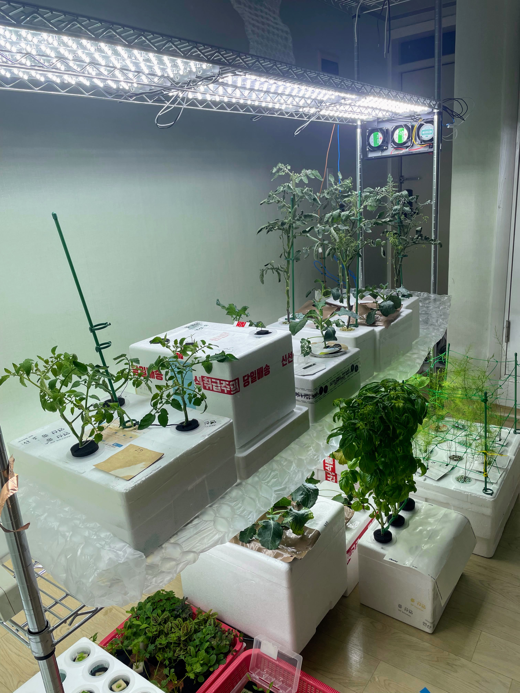

Light Source, a Shelf
Plundered from
- A Systematic Literature Review on Parameters Optimization for Smart Hydroponic Systems
- https://edman007.com/article/Plants/PAR-Lighting-Calculator
LED Lamp
Plants need PAR (photosynthetically active radiation) light, but household fluorescent or LED lamps are only partially PAR. So, the plant growth will be extremely stunted under a general LED lamp.
An LED lamp suitable for plants is called a grow light. Grow lights have a dedicated spectral distribution for growth. Most of them have a full spectrum, and they are usually purple.

PAR
PAR is usually measured as PPFD (photosynthetic photon flux density) in μmol/m2/s. PPFD is highly dependent on distance. The required PPFD for growth is:
- Leafy Green: 200~300μmol/m2/s, 12~16 hrs
- Flower, Fruit: 400~1000μmol/m2/s, 12~16 hrs
Generally, a high PPFD leads to faster growth. But the duration should be maintained for 12~16 hrs. Prolonged light exposure is detrimental.
An LED lamp is only for a small area. The area that can be covered by a single light is usually 20cm x 20cm max. A large area needs more lamps or modules.
A fan is needed to reduce temperature, and CO2, and increase air circulation. A static air will lead to severe growth stunting.

However, an electric light source is an energy-waster compared to natural sunlight. The conversion efficiency of electricity to light for an LED is still small, and light absorption efficiency is extremely low. For the plant itself, only a very small amount of energy is harvested, and most is converted to heat or reflected to the electric light source rather than a plant. Indoor farms are already suffering from such an inefficiency.
Shelf

A stand or shelf is a baseline hardware have to be tough and versatile. At the first time I used desks. This would be misearable but it's quite acceptable as the desk still usable for a workbench. Later I found it's bullshit to crawl to the beneath, so I stacked this on to the same desk. This unintentionally maked the setting similar to indoor plant stands.

Eventually I tried to install another LED modules and fans to the another desk, as you can see there were a leak. As the desk is made from MDF or something similar to wood, this made nothing attached in the bottom of the desk panel.

The shelf I'm using now is satisfying. It's strong and adjustable, and ridiculously fits to my intentions so there's no irreversible modifications.